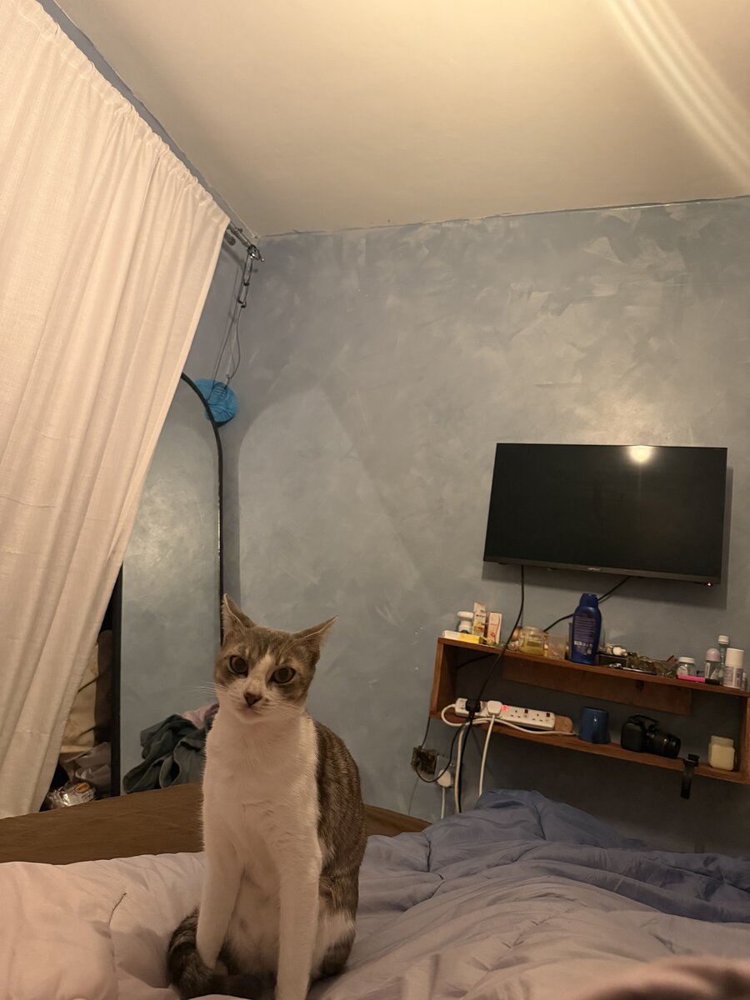
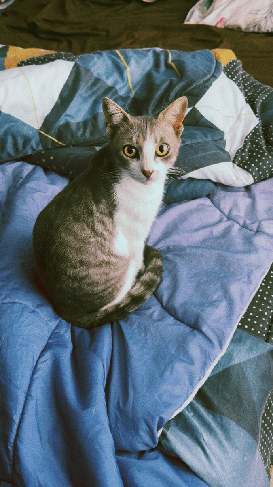
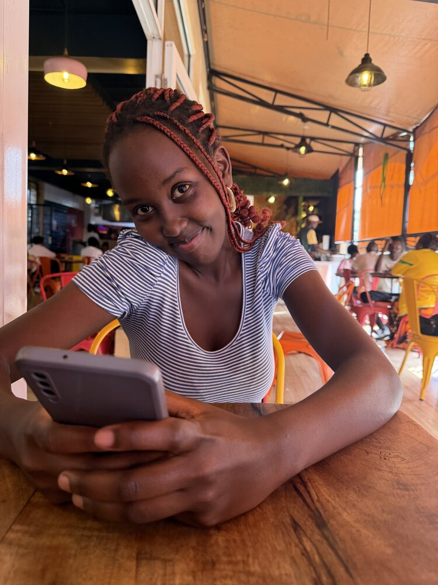
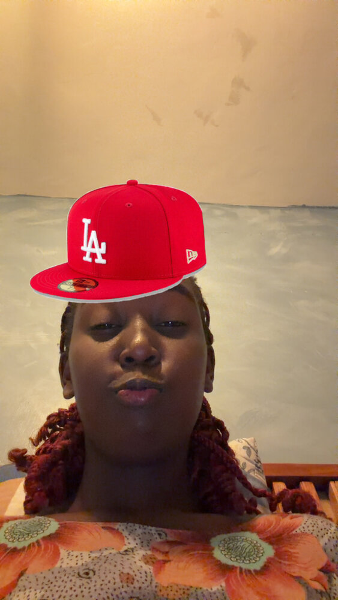
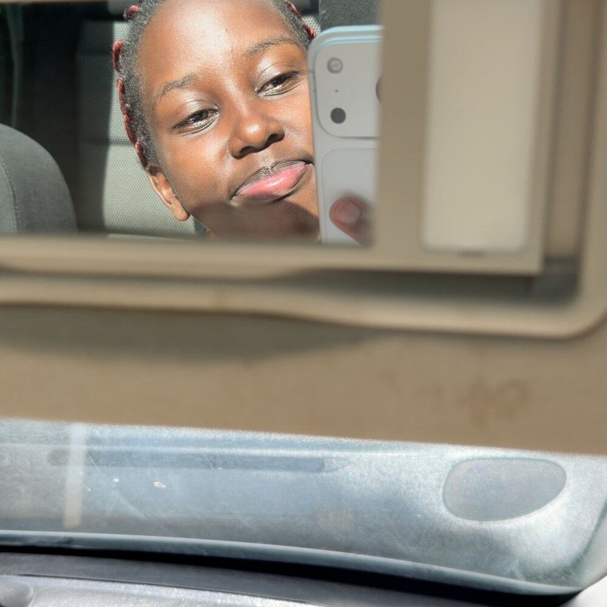
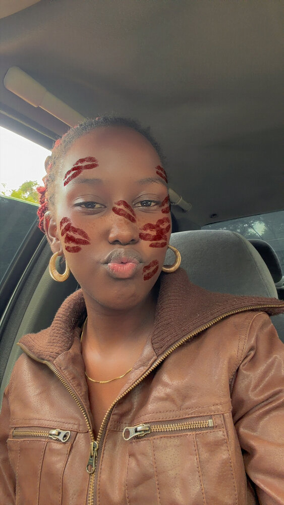
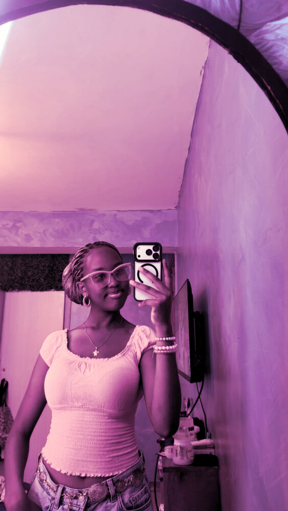
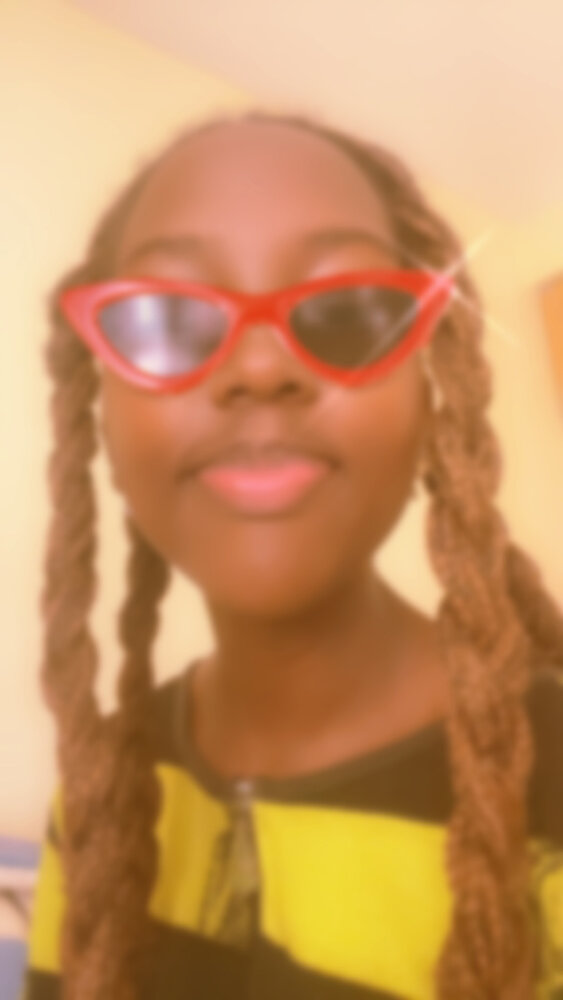
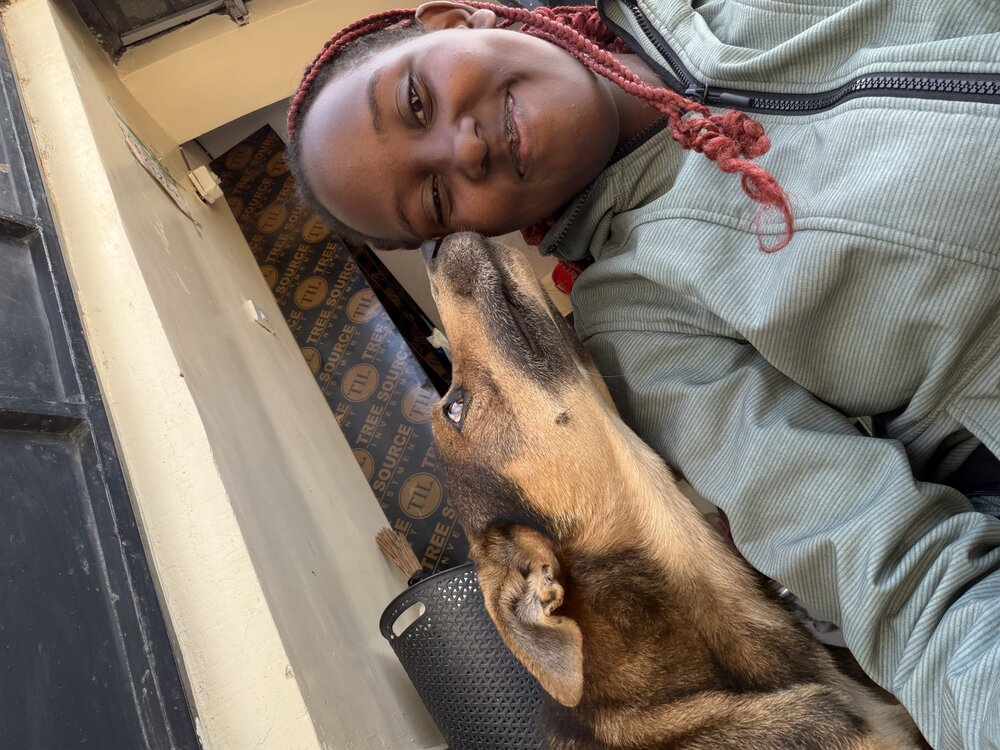
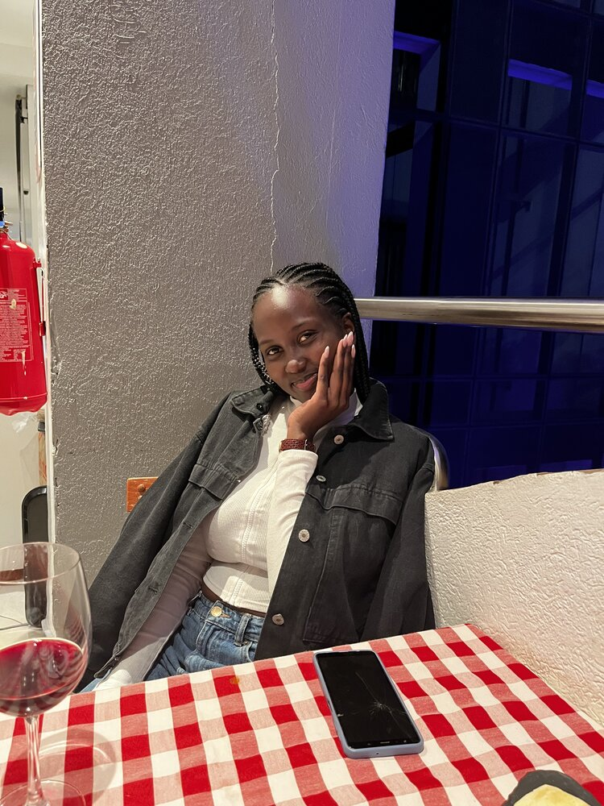

for the girl who has my whole heart
happy birthday, Daphine
June 16th - the day the world got immeasurably better.
chapter two
Things I Love About You
A list I could never actually finish - but here are eight reasons to start with. Tap a card to open it.
chapter three
A Letter, Just For You
June 16th
chapter four
Forever Loved
In memory of Klawie


Klawie
Some companions don't need words to make a house feel like home. Klawie did that just by being there - curled at the foot of the bed, wrapping herself around your neck for attention, watching over you in that quiet, certain way only cats can.
I know how much love you gave Klawie, Daphine, and how much love Klawie gave right back. That kind of love doesn't disappear. It just changes shape - from something that made you smile every day, into a memory that still does.
"Some pets are never forgotten. They leave paw prints on our hearts forever."
This little corner of the page is for every nap in the sun, every slow blink, every bit of comfort given without ever being asked. Forever loved. Never forgotten.
chapter five
Memory Gallery
A handful of moments, pinned up like polaroids.








chapter six
A Few Secret Messages
I hid some things in here. Go on, tap them.
final chapter
Happy Birthday,
Daphine
However you're spending today, I hope it's soft, joyful, and entirely yours. You deserve every good thing coming to you this year - and every year after.
- RJ